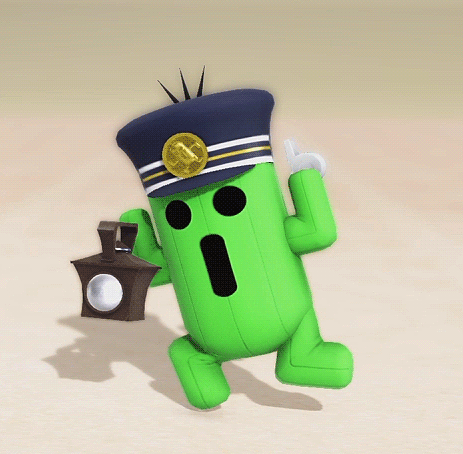

<ion-header>
  <ion-toolbar color="success">
    <ion-buttons slot="start">
      <ion-menu-button menu="main-menu"></ion-menu-button>
    </ion-buttons>
    <ion-title>Coversor</ion-title>
    <ion-thumbnail slot="end">
      
    </ion-thumbnail>
  </ion-toolbar>
</ion-header>

<ion-content color="verdexd">

  <div id="container">
    <div col="12">
      
    </div>
    <div col="12">
      ¡Pagina en construcción!
    </div>
  </div>

</ion-content>
